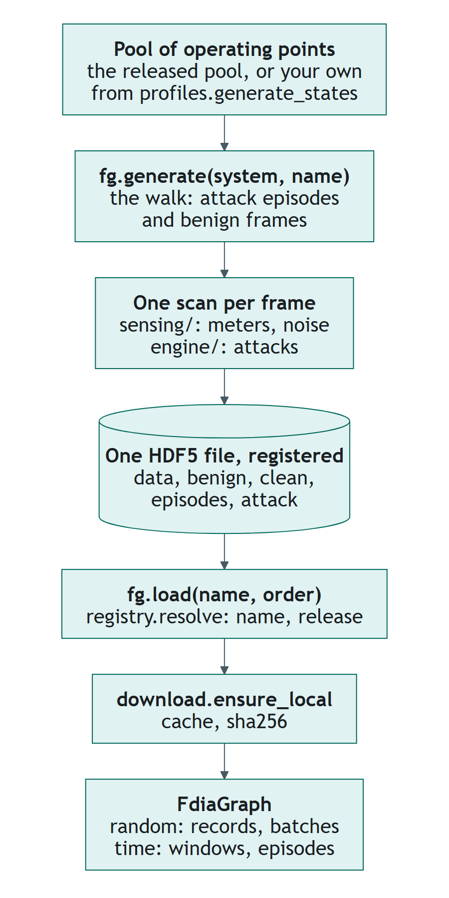

Repo roadmap¶
Two toolkits in one repository. The generation toolkit, the distribution fdia-graph and the
package fdia_graph (under src/), generates a timeline and loads it: its loader runs on the base
install, and its engine (power flow, meters, attacks) needs [generate]. The analysis toolkit, the
distribution fdia-analysis and the package fdia_analysis (under analysis/), is what is measured
on a timeline: state estimation, localization, federated training, trusted-meter selection and the
results store's code. It depends on fdia-graph; nothing in fdia_graph imports it
(tests/test_toolkit_boundary.py). The public surface is fg.* and the New York grid
(fdia_graph.generation.nygrid, behind [ny]) in the first, and fdia_analysis.se,
fdia_analysis.localization, fdia_analysis.trust and fdia_analysis.federated in the second;
everything else serves them.
![the package map in two boxes: the analysis toolkit fdia_analysis with federated over localization, localization and trust over se, the results store, and its own models and formulas; the generation toolkit fdia_graph with the public API over the dataset loader and the timeline writer, the loader over the registry and download, the writer over the engine, and its own models and formulas; one arrow, from the analysis toolkit to the generation toolkit: it reads timelines and uses the formulas and records](../figures/diagrams/roadmap_modules.png)
The two paths¶

Files¶
Every package has one page that says what each of its files does, and tools/layout.py checks that the page
names them all. The one-line summary of every file of the repository is
reference/MODULES.md, generated from the docstrings.
The generation toolkit, src/fdia_graph/:
| file or folder | what it is |
|---|---|
__init__.py |
the public API; the heavy helpers resolve lazily so load() never imports torch or pandapower |
errors.py |
every error the package raises on purpose, defined there |
registry.py, download.py |
(name, release) to a download spec with that release's file layout; fetch to ~/.cache/fdia_graph, sha256-verified |
schema.py |
the file protocol: every HDF5 group, dataset and attribute name, the legends a file carries and the window of the swing feature, defined once (the shapes and types of the datasets are tables of TimelineWriter, the one class that creates them) |
constants/ |
every other constant, one module per subject, each with its unit and source: channels.py (the column of each quantity in a measurement array, as enums: node_x[..., NodeChannel.P_INJ]), families.py (the attack families and their codes), meters.py (the meter kinds, accuracy classes and noise floors), fdia_graph/constants/grid.py (the IEEE cases, the bus types, the "no limit" ratings), time.py, streams.py (the keys of the random streams), numerics.py (fixed tolerances), fdia_graph/constants/records.py (the fields of a record, by group), files.py, releases.py (the pinned data release and its sha256 values) and newyork.py (NYISO's zones, the pinned inputs, NYgrid's dispatch numbers, the fitted load model). The modules import nothing from the rest of the toolkit; a value a user tunes is a field of a settings model instead; tools/layout.py refuses a module-level constant anywhere else |
timeline.py |
one continuous attacked timeline per system, written as one HDF5 file through the stages of generation/ |
profiles.py |
ISO load profiles to AC operating-state pools |
dataset/ |
FdiaGraph, composed of graph.py (the static graph), physics.py (admittances, clean flows), records.py (items, collate, DataLoader), export.py (whole-split arrays) and sequence.py (windows, episodes) over dataset/base.py (shared state); clients.py reads a New York timeline as federated clients |
models/ |
every value bundle the toolkit passes or returns, one module per subject: fdia_graph/models/base.py (Bundle), fields.py (the fields the record bundles share), fdia_graph/models/grid.py, frames.py, plan.py (a timeline's plan and design records), fdia_graph/models/data.py, assets.py; the settings in fdia_graph/models/config.py and the parser inputs in fdia_graph/models/inputs.py, checked by the one engine in fdia_graph/models/validation.py; and the fixed-set arguments in fdia_graph/models/choices.py. A model is imported from its module; the package's __init__.py exports no name. reference/DATA_DICTIONARY.md lists every field |
ratings/ |
PGLib-OPF branch ratings of IEEE-14, 118 and 300 |
formulas/ |
the mathematics of generation as pure functions with source keys: reference/FORMULAS.md |
engine/, generation/ |
the generator: the AC physics, the meters and the attacks, and the stages that walk a timeline: guides/generation.md |
generation/nygrid/, engine/sensing/ |
the New York grid and its meters: concepts/new_york_grid.md |
The analysis toolkit, analysis/src/fdia_analysis/ (../analysis/README.md):
| file or folder | what it is |
|---|---|
se/, localization/, trust/, federated/ |
the analysis packages, each with its page: analysis/estimation/README.md, analysis/localization/README.md, analysis/trust/README.md, analysis/federated/README.md |
se/detect/ |
the alarm rules of the New York grid: concepts/new_york_grid.md |
results/ |
the results store's code: ../results/README.md |
models/ |
the value bundles only the analysis packages use, on the generation toolkit's Bundle and validation engine: the settings in fdia_analysis/models/config.py, what the analysis formulas accept in fdia_analysis/models/inputs.py, the one rule only they declare in fdia_analysis/models/validation.py, the fixed-set arguments in fdia_analysis/models/choices.py; the score tables in scores.py, the truth an estimator is scored against in fdia_analysis/models/data.py, the estimator's pseudo-measurement records in fdia_analysis/models/grid.py, federated.py (a partition, a round's log), training.py and the results store's records in fdia_analysis.models.results |
formulas/ |
the mathematics of analysis as pure functions with source keys: reference/FORMULAS.md |
The repository¶
Every folder at the root has one role, and tools/layout.py fails a folder that has none (REPO and DOCS in the
tool; the generated table opens reference/MODULES.md).
| folder | holds |
|---|---|
src/fdia_graph/ |
the generation toolkit's package |
analysis/ |
the analysis toolkit: its package under analysis/src/fdia_analysis/, its tests under analysis/tests/, its own pyproject.toml |
tests/ |
the generation toolkit's test suite, and the helpers both suites share (tests/helpers.py; the fixtures both share are in the root conftest.py) |
examples/ |
scripts a user copies |
results/ |
the results store: data only, one CSV per experiment and runs.csv, with queries.py |
pipelines/ |
the builds of released data: pipelines/newyork/ builds the New York pool and timeline, and holds the MATLAB reference they are checked against |
tools/ |
repository tooling only: the gates, the generated docs, pull requests, releases |
docs/ |
the documentation, one folder per kind of page (below) |
Docs¶
| folder | holds |
|---|---|
getting-started/ |
tutorials: new_york_walkthrough.md, one attack day on the New York grid from start to finish |
guides/ |
one task each: generation.md (how a timeline is built), state_estimation.md, new_york.md (building the New York data), extending_new_york.md, troubleshooting_new_york.md |
concepts/ |
explanations: new_york_grid.md, how the New York grid and its meters are built |
analysis/ |
one page per study with its figures and their CSV sidecars: estimation/, localization/, trust/ and federated/ |
reference/ |
the file map (MODULES.md), data dictionary, glossary, concepts to code, formulas, examples, benchmarks |
figures/ |
shared images with their data sidecars |
Tests and releases¶
python tools/prereview.py |
every CI gate, the test suite and the checks CI does not run, on this checkout's source; run before a review is requested (docs/reference/REVIEW_CHECKLIST.md) |
pytest |
both suites from the repository root, on this checkout's source (the root pyproject.toml puts src and analysis/src on the path): builds a tiny IEEE-14 timeline in a throwaway cache (about a minute) and checks the documented contracts |
pytest tests, pytest analysis/tests |
one toolkit's suite: the generation toolkit's, which runs with fdia_analysis blocked (tests/test_toolkit_boundary.py), or the analysis toolkit's, on the same tiny timeline (the root conftest.py) |
FDIA_SLOW=1 pytest |
adds the slow checks: the estimator sanity test on the published IEEE-118 file (the analysis suite) and the longer attack searches (the generation suite) |
| CI | tests on Linux (3.12 and 3.9) and Windows, pyright, ruff format and check, the readability gate, the layout gate (tools/layout.py: names, docstrings, package pages, cited names, the repository map, the file map), the generated-docs checks, install on 3.9 and 3.12 |
| release | bump PR, then python tools/release.py vX.Y.Z notes.md (tag, GitHub release, PyPI); see CONTRIBUTING.md |
Reading order¶
| step | read | to learn |
|---|---|---|
| 0 | CONTRIBUTING.md |
the rules and the pull-request flow |
| 1 | README.md |
install and quickstart |
| 2 | guides/generation.md |
how a timeline is generated, and which layers a feature may read |
| 3 | reference/GLOSSARY.md |
every term, with where it lives in the code |
| 4 | reference/DATA_DICTIONARY.md |
every array and shape |
| 5 | this page, then reference/MODULES.md |
which file does what |
| 6 | reference/CONCEPTS_TO_CODE.md |
paper formulas to code |
| 7 | reference/CLASS_MAP.md |
the class and module diagrams, drawn from the code by tools/class_diagrams.py |
| 8 | reference/EXAMPLES.md |
training examples to copy from |
| 9 | docs/analysis/estimation/README.md, guides/state_estimation.md |
measurements in, better-than-WLS state out |
| 10 | docs/analysis/localization/README.md |
which buses are under attack, and why the slow ramp is open |
| 11 | docs/analysis/trust/README.md |
which meters to secure so a stealthy attack stops being stealthy |
| 12 | docs/analysis/federated/README.md |
the localizers and the prior trained across clients that never pool their records |